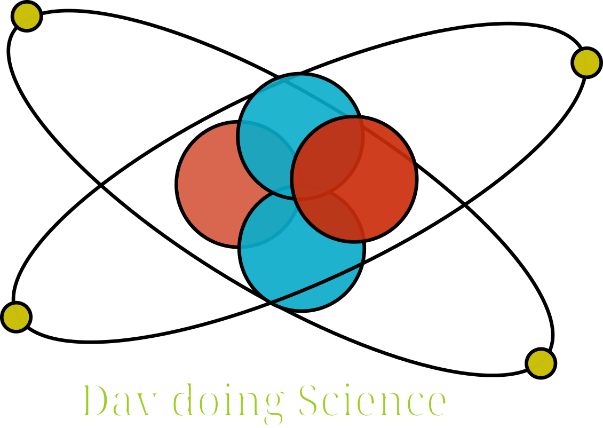

|  | Davide's Page |
Here is where I write something about me. But I guess nobody is really interested in it.
Here following some content of my interest
I enjoy particularly to understand the performances of computing instructions obained through differen programming languages and compilers/interpreters.
You can find one repository here: https://github.com/angeldav03/YAPLD
JS Result
Rust-WASM Result
CWASM Result
Electronics and embedded programming are cool topics that, with the benefit of time,
I would explore more in depth than I am currently doing.
Here (LINK)
one of my favourite MCU types: STM32 has been programmed to relay some UART messages on a small 128x64 px display
The H2 calculator is an interactive html/JS page that is helping evaluating
which one is the most practical material to be used as a storage for hydrogen H2.
Hypothetically this calculator page can be used also for analysing how much of the bulk material has undergone oxidation.
The page will be in continuous change/improvement.
Once Hessam (github links: here and here) and I were geeking around with some acoustice levitation.
Turns out it is really really cool to watch it in action and it takes a lot of soldering.
Lesson learned from that day: Solder flux taste disgusting!
Following an animated gif of the acoustic levitation of a piece of porexpan and some droplets of water.